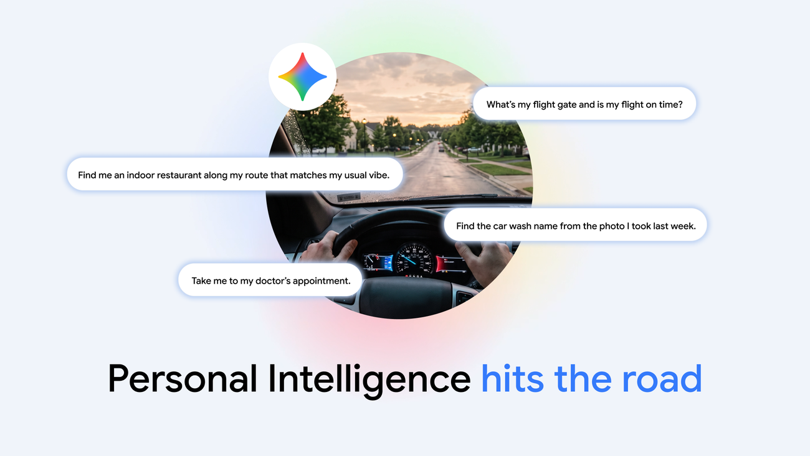

今天值得带走的判断是：自动化越深，状态越要可见。 车机、原型评审与行业 Agent 的共同难点，不是入口够不够聪明，而是权限、进度和失败后的接管能否被看懂。
BISCAY / DAILY BRIEF / 10.21
今日晨报
科技、设计工具、AI、单机游戏与国产新能源。今天的共同问题：系统越来越主动，用户如何知道它正在做什么。

车载 AI · 今日焦点AI 进入车内，
AI 进入车内，
权限也要跟着上车
Google 将 Gemini 的个性化能力带入 Android Auto 和内置 Google 的汽车。驾驶场景里，助手知道得越多，越要让用户清楚它何时读取个人信息、何时开口。
阅读原文今天最值得观察的不是单一模型升级，而是 AI 开始进入车机、小企业经营和专业行业流程。设计工具把评审意见直接贴进可运行原型，产品团队需要重新界定“反馈已处理”的证据。Safari 的追踪防护和汽车安全规则都在收紧边界；游戏方面，两款单人作品刚上架，适合先看真实游玩反馈。